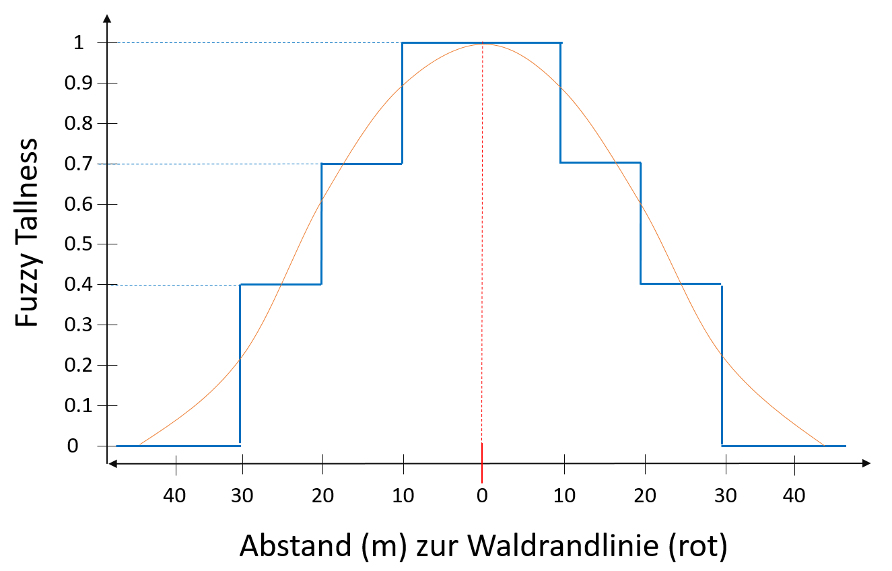
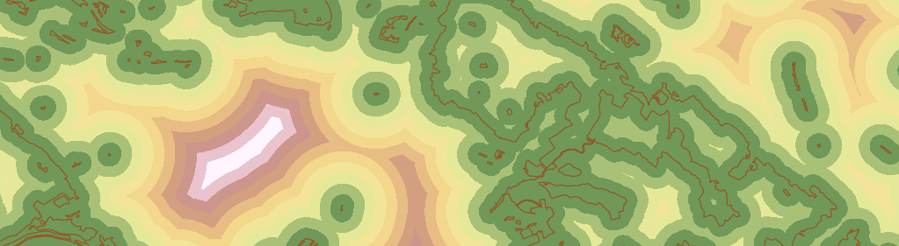

Unschärfe des Waldrandes¶
Neuere Forschungen haben ergeben, dass sich Zecken vermehrt im Waldrandbereich aufhalten und dadurch insbesondere dort das Risiko von einer Zecke gestochen zu werden besonders hoch ist. Deshalb sind wir interessiert daran, ob Zeckenstiche von App-Nutzern auch vermehrt im Bereich des Waldrandes gemeldet wurden. Im Gegensatz zu den vorherigen Übungen, welche die Erfassungsgenauigkeit von Punktdaten untersuchte, liegt der Fokus nun auf der Unschärfe des Waldrands. Wie wird ein Waldrand überhaupt definiert? Handelt es sich um eine scharf abgegrenzte Linie? Falls ja, wo liegt diese Linie exakt? Sind die Baumkronen, die Krautschicht oder die einzelnen Stämme ausschlaggebend? Oder handelt es sich beim Waldrand um einen Bereich mit einem bestimmten Abstand von einer zu definierenden Waldrandlinie? Wie würdest Du in der untenstehenden Abbildung den Waldrand festlegen und wie würdest Du dies GIS-technisch umsetzen?
Abb. 1 Bildquelle: K. Spörri (2013) in Waldrandaufwertung im Kt. Aargau (Forschungsgruppe Vegetationsökologie, ZHAW)¶
Übung 7: Waldrandlinie aus Waldpolygon erstellen¶
Die Waldrandlinie kann mit Hilfe des Geoverarbeitungswerkzeug Polygon to Line hergeleitet werden. Überlege Dir, ob vorgängig eine Selektion im Input Feature notwendig ist.
Betrachte das Resultat und überlege Dir wie genau entspricht die digitale Waldrandlinie dem Waldrand in der Realität? Kann das Objekt Waldrand überhaupt grenzscharf abgebildet werden (vgl. rote Linie in Abbildung)?
Abb. 2 Rote Linie: abgeleitete Waldrandlinie / orange Punkte: Stichstandorte original / blaue Punkte: Stichstandorte 40 Monte Carlo Runs¶
Übung 8: Waldrandbereich festlegen¶
Wir gehen davon aus, dass ein Waldrand kaum mit einer grenzscharfen Linie repräsentiert werden kann. In der Realität entspricht ein Waldrand wohl eher einem bestimmten Bereich. Der Waldrand an sich hat eine Unschärfe (Vagueness). In der GIS-Welt wird solche Unschärfe oft mit einem Puffer mit einem zu definierenden Abstand zu einer Linie (Waldrandlinie) abgebildet.
Erstelle basierend auf der in Übung 7 erstellten Waldrandlinie nun den Waldrandbereich mit einem äusseren und inneren Abstand von 25 Metern zu ihr. Benutze hierfür das Dir bereits bekannte Geoverarbeitungs-werkzeug „Buffer“. Achte bei der Umsetzung auf die korrekte Festlegung der Werkzeugparameter.
Optional Analog wie in Übungen 3 bis 5 könntest Du nun untersuchen, welchen Einfluss die Unschärfe des Waldrandes darauf hat, ob Zeckenstichstandorte im Waldrandbereich liegen oder nicht.
Übung 9: Distanz zu Waldrandlinie berechnen¶
Nun wollen wir diese Unschärfe des Konzepts Waldrand noch erweitern und die grenzscharfe Pufferdistanz aus der vorigen Übung mit einer graduellen Zugehörigkeit (membership function) ersetzen. Hierfür sollen folgende Fuzzy Tallness Werte definiert werden (vgl. Abbildung): Abstand zu Waldrandlinie:
10 Meter = 1
10 bis 20 = 0.7
20 bis 30 = 0.4
30 Meter = 0

Berechne nun als ersten Schritt für den gesamten Untersuchungsraum den Abstand zur nächstgelegenen Waldrandlinie. Nutze hierfür das Geoverarbeitungswerkzeug Euclidean Distance. Lege die Output Cell Size auf 1 Meter fest und definiere in den Environments das Output Coordinate System und den Raum in dem diese globale Rasterfunktion ausgeführt wird (Extent = Untersuchungsgebiet).
Die Ausführung dieser Rasterfunktion kann einige Minuten dauern.

Übung 10: Zuweisung der Fuzzy Tallness Werte¶
Jeder Zelle mit einem Distanzwert soll nun ein Fuzzy Tallness Wert gemäss Abbildung in Übung 9 zugeteilt werden. Verwende hierfür das Geoverarbeitungswerkzeug Reclassify.
Beim Reklassifizieren können den neuen Werten nur ganzzahlige Werte zugeteilt werden. Verwende deshalb die Werte 100, 70, 40 und 0 statt 1, 0.7, 0.4 und 0. Nutze anschliessend die Werkzeuge Float und anschliessend Divide um die ganzzahligen Werte wieder in Kommawerte umzurechnen.
Übung 11: Unschärfe-Werte den Stichstandorten zuweisen¶
Die für jede Zelle definierten Unschärfe-Werte (membership zum Waldrand) werden nun den Daten mit den Stichstandorten zugeteilt. Dies erfolgt mittels Extract Values to Points.
Dabei sollen die Unschärfe-Werte (1 / 0.7 / 0.4 / 0) vorerst nur den Original-Stichstandortdaten zugeteilt werden (Input point feature = Tick_Original). Erstelle eine grafische Visualisierung (bsp. Histogramm).
Beantworte anschliessend folgende Fragen:
Wie viele Zeckenstiche im Original-Datensatz verfügen über Waldrand Unschärfe-Werte von 1, 0.7, 0.4 und 0 und welche Aussage kannst Du damit machen?